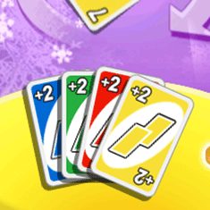

20 |
Cards |
 |
|
You must play with blue, green, yellow and red cards with the values from 0 to 9. These are the basic cards in the deck and will determine the general flow of the game. Draw Two By the Standard rules, when a Draw Two card is played, the next player must draw two cards from the deck and forfeit his or her turn. If you are playing with the Penalties option and the previous player plays a Draw Two card and you also have a Draw Two card, you can put it down, and you will not be penalized. The player after you will get double the penalty. If he or she plays the same card, the effect is transferred to the next player. There are 8 Draw Two cards in all: 2 blue, 2 green, 2 red and 2 yellow.  Skip When this card is played, the next player is “skipped,” meaning he or she loses a turn. There are 8 Skip cards in all: 2 blue, 2 green, 2 red and 2 yellow.
Reverse Playing this card simply reverses the direction of play. The game will continue in the new direction until another Reverse card is played. There are 8 Reverse cards in all: 2 blue, 2 green, 2 red and 2 yellow.
Wild Wild cards can be played after any card color. The player using this card can choose to continue the game in any of the four colors.
Wild Draw Four Playing this card not only lets the player choose the color in play but also forces the next player to draw four cards from the deck and lose his or her turn. However, this card can only be used when a player does not have a card that matches the color being played. A player can choose to bluff and play this card even if he or she is holding a card that matches the color in play, but if that player is challenged successfully, he or she has to draw four cards. Note: If the player holds a matching number or action card (Reverse, Skip, Draw Two) then he or she can still legally play the Wild Draw Four card. It is always illegal to play the Wild Draw Four card if the player also holds a Wild card.
If a Wild Draw Four card is played on you, you can challenge it by selecting Challenge, or you can draw four cards by selecting Draw. |


 |
 |
 |